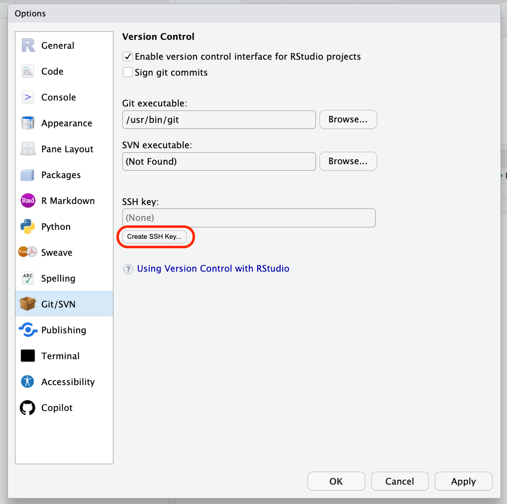
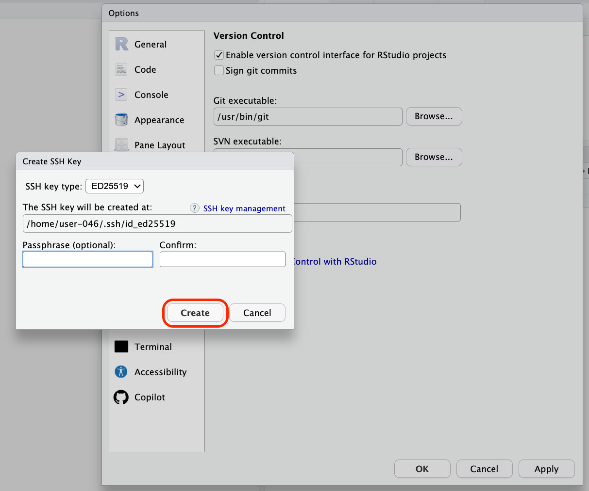
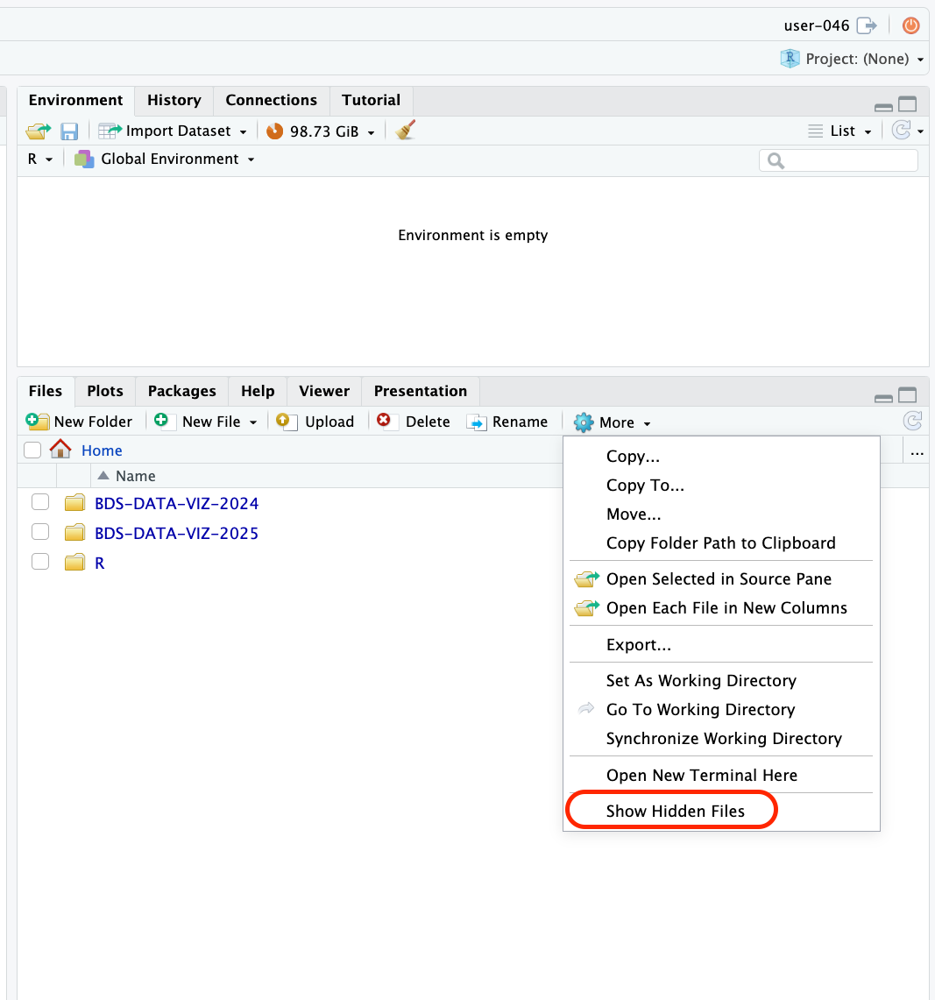
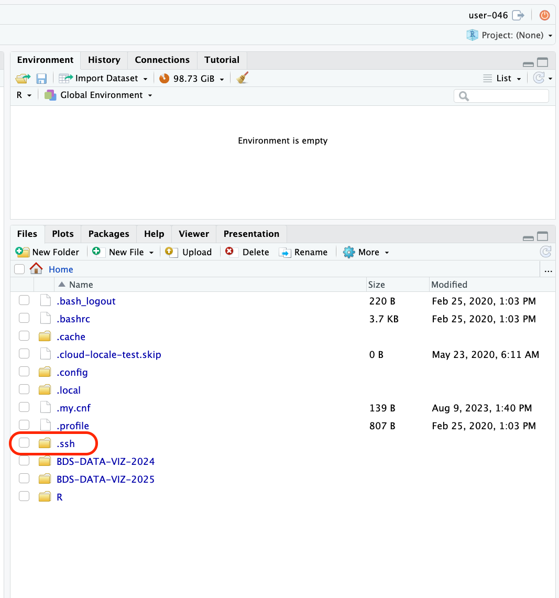
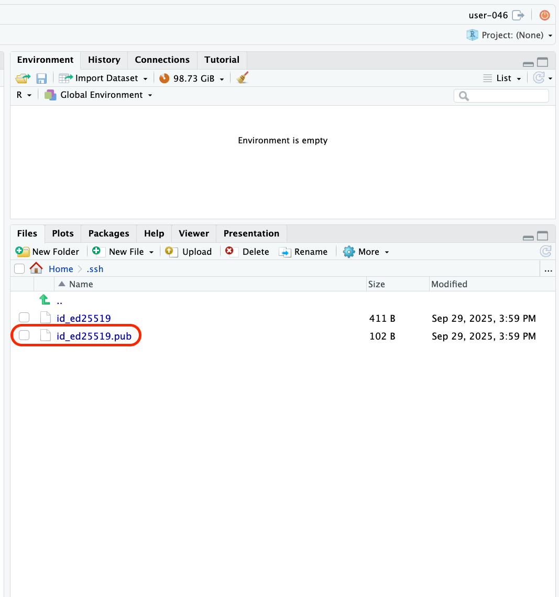
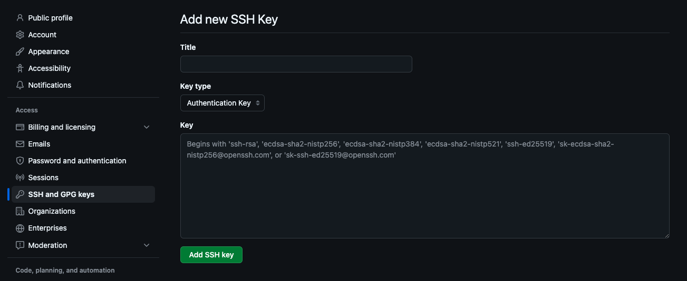
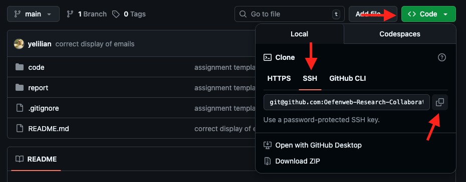
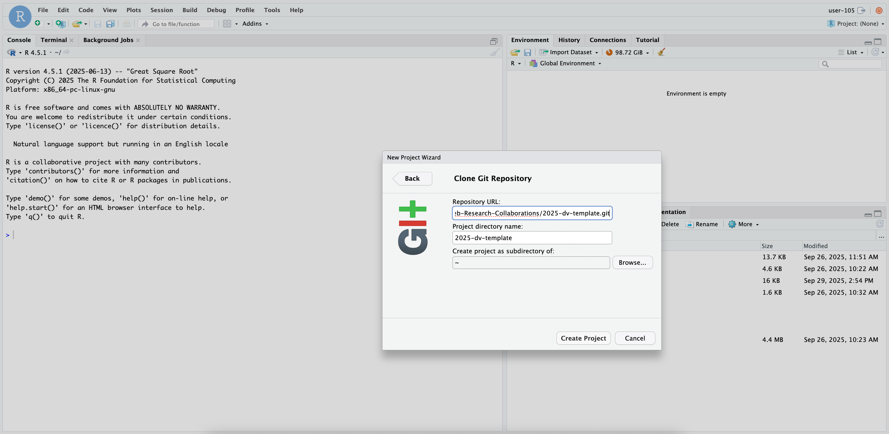

Working with Git on the Server
Introduction
In this tutorial, you will learn how to:
- Connect your GitHub account to the online RStudio server
- Clone your assigned GitHub repository for the group assignments into Rstudio and initialize Git in your RStudio project, so you can track changes and collaborate with your team
Connecting GitHub to RStudio
In order to be able to connect your online RStudio environment to your group’s GitHub repository, you first have to create a SSH key through the following steps.
Step 1: Create and add SSH key to GitHub
Log into your online RStudio environment: https://data-visualization.oefenweb.nl/rstudio/auth-sign-in.
Create a SSH key: Go to
Tools>global options>GIT/SVN> click onCreate SSH Key...> and clickcreateagain; a passphrase is not necessary. Make sure the SSH key typeED25519is selected in the dropdown menu (should already be selected for you).
 
- Now go to your
Filespane in RStudio and selectShow Hidden Fileslike this:

- You can find your SSH key in the
.sshfolder. Open the file with the public key (ending with.pub) and copy the entire content of the file. We need to add this public key to your GitHub account
 
- Now open GitHub and go to your
Settings. From here, go toSSH and GPG keys, and click onNew SSH key. Add the public key you just copied from your online RStudio, and give your key a title (for example,Data viz server).

And there you go! You have now successfully let your online RStudio environment and your GitHub account know that these are allowed to communicate with each other. We can now clone your assigned GitHub group repository into your RStudio account.
Step 2: Adding git-tracked R projects
- Go to your group’s GitHub repository and click on the green
<> Codebutton. Choose to clone the repository via SSH and copy the code:

Now go back to RStudio. On the top right (sort of cubical icon) you can find a project overview
Project: (none). Make sure this is in fact set to no project, if you see the name of a different repository/project, click it and selectclose project.Make a new R project for your group assignment: click on
New project>Clone Git Repository. Add the code you just copied from GitHub toRepository URLand create the project (the Project directory name will automatically be created for you).

It will now appear as if your RStudio is re-starting; don’t be feared, this is what is supposed to be happening. Projects are temporary representations of your RStudio environment, so that you can work on different projects with different data to keep your work structure clear.
If you look in your Files pane, you will see that the folder was selected, which holds all the information that was on the GitHub repository.
If you look in your Environment pane, you can now see an extra tab called Git. You have now successfully cloned your repository and let Git track your changes!
Now you can work in your project
Open this project whenever you are working on the group assignments. You do this by either by clicking on the Project: <your-repo-name> button in the top right corner, or by double-clicking the .Rproj file in your project directory.
Commit, push, and pull changes via the terminal in the online RStudio editor, or in the tab called Git. Remember to always pull changes into your environment before you start working on the project, and push your changes when you are done working on it. This way, you and your team members will always have access to the most recent version of the project, and you (hopefully) avoid merge conflicts.
It is good practice to close the project when you are done working on it, to avoid accidentally making changes to the wrong project the next time you open RStudio.